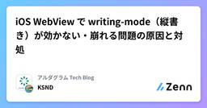

アルダグラム Tech Blogのフィード
https://zenn.dev/p/aldagram_tech
株式会社アルダグラムのTech Blogです。 世界中のノンデスクワーク業界における現場の生産性アップを実現する現場DXサービス「KANNA」を開発しています。 採用情報はこちら: https://herp.careers/v1/aldagram0508/
フィード

iOS WebView で writing-mode（縦書き）が効かない・崩れる問題の原因と対処
アルダグラム Tech Blogのフィード
アルダグラムで、KANNA というモバイルアプリの開発を担当している小千田です。この記事では、iOS の WebView 上で「縦書き文字の表示」に関して発生した表示不具合と、その対応についてまとめます。 事象KANNA には、KANNAレポート という、工事現場や製造現場で使っている Excel を Web 上でアップロードし、Excel ライクな帳票をテンプレートとして作成・表示・編集できる機能があります。この機能は Web とアプリ（WebView）の両方で提供しています。今回、お客様から「Web では表示できるのに、アプリだとうまく表示できない帳票がある」という不具合報...
2日前
Speech-to-Text Chirp 3 が asia-northeast1 で PERMISSION_DENIED になる原因
アルダグラム Tech Blogのフィード
はじめにGoogle Cloud Speech-to-Text V2 の chirp_3 を asia-northeast1 で利用した際、一部のプロジェクトで以下のエラーが発生しました。7 PERMISSION_DENIED:Permission denied for project <PROJECT_NUMBER>on model chirp_3 locale ja-JP.It is no longer generally available.一方、同じモデルとリージョンを指定していても、別のプロジェクトでは正常に動作していました。Google Clou...
7日前

Claude Codeのskillをskillでレビューする ― 静的チェック×LLMレビュー×git hooksの3層ゲート
アルダグラム Tech Blogのフィード
こんにちは！アルダグラムでQAエンジニアをしている千葉です。私たちのQAチームでは、テスト分析からテスト設計までのQAプロセスをClaude Codeのskill（スキル）として整備し、チームで共同運用しています。その中心が、これらのQAプロセスを丸ごと任せられるAIエージェント「qa-orchestrator」です。仕組みと効果は、弊社QAメンバーが記事にしていますのでそちらもご参考ください。https://zenn.dev/aldagram_tech/articles/4aea4b13671ae3今ではqa-orchestratorの存在を前提に、固定制インプロセスQAから...
9日前
固定制インプロセスQAからプール制へ——QA体制を再設計した話
アルダグラム Tech Blogのフィード
こんにちは！アルダグラムでQAエンジニアをしているshige_sです。私たちQAユニットでは、ノンデスクワーカー向けアプリ「KANNA」の品質保証を担っています。これまでアルダグラムのQAユニットは、各開発チームに固定のQAエンジニアが所属する「インプロセスQA」という体制を採用していました。しかし、プロダクトの成長と開発組織の拡大に伴い、この体制では対応しきれない課題が生まれてきました。この記事では、固定制からプール制への移行という大きな体制転換を、どのように設計・運用しているかをご紹介します。 1. これまでの体制：固定制インプロセスQA従来のQA体制では、各開発チー...
23日前
【輪読会レポート】Attention ってなに？
アルダグラム Tech Blogのフィード
こんにちは！株式会社 Aldagram でエンジニアとして働いている鈴木です！Attention って何なのか、気になりますよね？Google の有名な論文「Attention Is All You Need」のあれです。正直、名前を知っているだけで、何のことか全然わかっていませんでした！今回は、LLM 輪読会で Attention について扱ったので簡単に紹介します！!LLM 輪読会とは社内で開催されている輪読会の一つで、 LLM の原理を理解することを目標としています！週に 1 回、5 人前後で議論しながら取り組んでいます。読んでいる本： 作ってわかる大規模言語...
1ヶ月前
[Rails]一括インポート処理におけるメモリ改善
アルダグラム Tech Blogのフィード
こんにちは！アルダグラムでエンジニアをしている kageyama です私たちが開発している「KANNA」のバックエンド（Ruby on Rails）で、案件インポートの上限を引き上げるための取り組み記録です。単純な上限値の変更ではなく、Worker のメモリ枯渇 という壁にどう向き合い、計測 → クイックウィン → 根本対応と段階的に削っていったか、コードを交えて紹介します。 TL;DR既存案件インポートの処理は 行数 × カスタマイズ項目数 に比例してメモリを食う。500 件で数百MB、仮に単純計算で 3,000 件なら 1.5GB 超。Worker が落ちると他ジョブ...
1ヶ月前
Blacksmith 導入で GitHub Actions のコストを約1/3にした話
アルダグラム Tech Blogのフィード
こんにちは！アルダグラムでエンジニアをしている秋田です。弊社では複数のリポジトリで GitHub Actions を使って CI/CD を回しており、Rails の RSpec や各種デプロイなどが毎日大量に走っています。ここしばらく「GitHub Actions の請求が地味に重い」「重い CI が遅い」という悩みを抱えていたのですが、ランナーを Blacksmith に移行することで、コストを下げつつ重い CI の実行時間も短くすることができました。本記事では、その背景・PoC・本格移行・ハマりどころ・結果をまとめます。https://www.blacksmith.sh/...
2ヶ月前
Aurora → Datastream → BigQuery で社内分析基盤を作り直してる話
アルダグラム Tech Blogのフィード
こんにちは、アルダグラムのSREエンジニアの okenak です。今期は、社内のデータ分析基盤を、Web 上の GUI から SQL クエリを実行・可視化できる OSS の BI ツール Redash を中心とした構成から、BigQuery を中心とした構成に拡張する対応を行いました。具体的には、Aurora MySQL / PostgreSQL の変更データを Google Cloud Datastream でほぼリアルタイムに BigQuery へ同期する CDC パイプラインを構築しています。本記事ではその際の方式選定の経緯と、構築にあたっての設計判断について整理してみたいと思...
2ヶ月前
QAボトルネック解消に挑戦 - QAプロセスを qa-orchestrator に任せてみた
アルダグラム Tech Blogのフィード
1. はじめにこんにちは。アルダグラムで業務委託QAをしている miyashita です。今回は、qa-orchestrator という AIエージェント（Claude Code の skill / agent 群）について、なぜ作ったか / どう設計したか / 結果どうなったか を一通り書きます。3 行サマリQA が開発のボトルネック化してきて、属人化も気になっていたClaude Code 上で QAプロセスを担う AIエージェントを作った結果：テスト設計工数 約 45% 削減、クオリティ・フォーマットも一定化（ただし課題も残っている）AIをQAプロセスにどう...
2ヶ月前
Amazon S3 Vectors で、ベクトル DB を立てずに画像検索 PoC を作る
アルダグラム Tech Blogのフィード
こんにちは！アルダグラムでエンジニアをしているやすまさです。建設・施工管理 SaaS「KANNA」では、現場写真が日々大量にアップロードされています。これらを「足場の写真」「配筋の写真」のように 自然言語で検索したい という要望は以前からありましたが、ベクトル DB を一台立てて運用する、というのは PoC のハードルとしては少し重めでした。そこで、2025 年に一般提供が始まった Amazon S3 Vectors を使って、KANNA の現場写真をテキストで意味検索するプロトタイプを作ってみました。本記事ではその構成と、実際に作って分かった所感を共有します。 TL;DRA...
2ヶ月前
Next.js (Turbopack) のバンドルサイズを元の半分まで削減した話
アルダグラム Tech Blogのフィード
こんにちは！アルダグラムでエンジニアをしている今町です。今回は、弊社で運用している Next.js 製の Web アプリケーションの バンドルサイズを元の半分まで削減した話 を書いていきます。単に「サイズが減って嬉しい」だけじゃなくて、どのページを開いても巨大な共通チャンクが必ずロードされる という構造的な問題を抱えていたので、そこを解きほぐしていく過程を書き残しておきます。Turbopack / webpack を問わず、Next.js をある程度の規模で運用している現場なら、どこかで一度は踏む地雷だと思うので、参考になれば幸いです。 背景：バンドルがクソデカすぎる問題 🔥対...
3ヶ月前
「AIが見つけられなかった」を織り込む — EMのClaude Code運用で実践したLLMの構造的特性との付き合い方
アルダグラム Tech Blogのフィード
1. はじめに — EMがAIコーディングエージェントを使う理由こんにちは、アルダグラムで EM（エンジニアリングマネージャー）をしている@ryosoです。今回は、Claude Codeを開発作業だけでなく、影響範囲の調査や技術的負債の優先順位判断といったEMとしての意思決定にも活用している話を紹介します。これが今回のメインテーマです。EMの仕事には「コードベースの理解」が欠かせない場面があります。変更の影響範囲を見積もるPRのレビューで設計判断の妥当性を評価する技術的負債の優先順位を判断するこの記事では、実際に構築したスキル・エージェント・ワークフローと、運用して...
3ヶ月前
転職してエクセルファイルを読み解いてHTMLに変換する仕事をしていたが、悪役令嬢は出てこないし、勇者パーティーも追放されなかった話
アルダグラム Tech Blogのフィード
こんにちは。アルダグラムのテクニカルフェロー(自称?)をしている蓬莱です。（特に社内外でアナウンスされているわけでもないので、本当に自称かも知れない。。）とあるMから始まるGAFAM企業をやめてブラブラしていたところを、縁があってアルダグラムに入社させていただく事になりました。（もうちょっとで半年になります）突然ですが、皆さん、エクセルファイルを読んでますか？「普通に仕事でエクセル使ってるわー。嫌やけど。」みたいな話じゃありません。エクセルファイルをアプリではなく人間が読むという話です。「ちょっと何言ってるかわかんない・・」って帰ろうとしたアナタ！ほんのもう少しだけお付き...
3ヶ月前
Claude Code × Maestroでネイティブアプリを検証してみる
アルダグラム Tech Blogのフィード
こんにちは。アルダグラムでエンジニアをしている内倉です。AI を使った実装では、「AI が自分で作業を検証できる手段を与えるのが大事」とよく言われていますね。Web アプリでは、ブラウザを実際に操作させて検証まで任せるような例をよく見かけますが、ネイティブアプリだとどんなものかしら？と思い、試してみることにしました。 前提チームやリポジトリの環境は、次のようになっています。React Native ベースで、一部KMP化しているチームで Claude Code を使っており、 CLAUDE.md 等は整備済み検証は Android のローカルビルドで行う 今回やる...
4ヶ月前
Design Docの構造化 ― Notion × AI Agentで得た知見
アルダグラム Tech Blogのフィード
プロダクトの機能開発にあたり、NotionでDesign Docを体系的に構造化する機会がありました。結果として、人間がレビュー時に必要な情報へ素早く辿り着けるようになりました。加えて、Notion MCP経由のClaude Code等のAI Agentからも、設計情報を効率的に取得できるようになりました。本稿では、その過程で得た構造化の知見と、AI時代のドキュメンテーションに対する考察を共有します。!本記事における "Design Doc" の定義"Design Doc" という用語は、組織や文脈によって解釈が大きく異なります。Design Docs at Google ...
4ヶ月前
突然 iOS アプリの配信が停止！？Apple Developer Program のメンバーシップ更新で注意すべきこと
アルダグラム Tech Blogのフィード
こんにちは！アルダグラムでエンジニアをしている渡邊です！iOS アプリを配信するためには Apple Developer Program に登録する必要があります。こちらは年間99米ドルの費用がかかります。（2026年3月時点）今回は Apple Developer Program に関連して、先日発生したトラブルについて紹介したいと思います。 突然届いた一通のメール先日、私の元に以下のようなメールが届きました。Apple Developer Programのメンバーシップの有効期限が2026年○月×日に切れたことをお知らせします。そのため、App Storeに掲載されて...
4ヶ月前
DevinのSchedules機能を活用して、RenovateのPRのレビューを自動化してみた
アルダグラム Tech Blogのフィード
こんにちは！アルダグラムでエンジニアをしている柴田です はじめにアルダグラムでは、パッケージの依存関係の更新管理に Renovate を活用しています。Renovate の PR をチームで確認する前に、Devin にレビューを依頼しているのですが、この依頼作業が手動だったため、時折忘れや手間が発生していました。今回は Devin の Schedule 機能を活用して、レビュー依頼を自動化する仕組みを構築してみました。その背景と設定方法、実際の動作結果を紹介します。なお、Devin とは Cognition 社が開発した自律型の AI ソフトウェアエンジニアです。GitHub...
4ヶ月前
PlaywrightのVRTが不安定？アニメーションと遅延読み込みに立ち向かった話
アルダグラム Tech Blogのフィード
はじめにこんにちは！アルダグラムでQAエンジニアをしている千葉です！今回は、KANNAのランディングページ（以下、LP）のビジュアルリグレッションテスト（以下、VRT）をノーコードテストツールからPlaywrightに移行した際に直面した課題と、その解決策についてお話しします。 なぜPlaywrightに移行したのかこれまでノーコードテストツールでLPのVRTを実施していましたが、以下の理由からPlaywrightへの移行を決めました既存のE2Eテスト基盤の活用：KANNAではすでにPlaywrightでのE2Eテストを一部実装していたため、同じ技術スタックでVRTも...
5ヶ月前
「チームの強度」とは何か — 曖昧さに向き合うAI時代の開発チーム
アルダグラム Tech Blogのフィード
KANNAのバックエンド開発を担当している山下です。同じチームのjinさんが、モブプロでの新規機能開発について記事を書いてくれました。https://zenn.dev/aldagram_tech/articles/726df63b38ac23私はこの開発でまとめ役として動いていました。jinさんの記事は「モブプロをやってみてどうだったか」という実践レポートですが、本稿ではその手前にある 「なぜこのチームはうまく動けたのか」 を掘り下げると同時に、私自身が以前からぼんやり考えていた下記のテーマとの接続を考察してみます。抽象度が高く曖昧な状態で受け取ったテーマを、自律的に解決に導け...
5ヶ月前
モブプロで新規機能開発を進めてみた話
アルダグラム Tech Blogのフィード
こんにちは！アルダグラムのKANNAの開発お手伝いをさせて頂いている @takjin です。現在、KANNAプロジェクトにて新規機能の開発に携わっています。（この記事が公開される頃には、リリースされているかもしれません）この機能の開発チームは、私を含めて計4名で、チームでは実装の大半をモブプロ（モブプログラミング）形式で進めています。今回は、その取り組みを通じて得られた学びや気づきをまとめてみました。 モブプロとはモブプログラミング（モブプロ）は、複数人で1つの作業画面を共有し、常にコミュニケーションを取りながら開発を進める手法です。1人がドライバーとし...
5ヶ月前